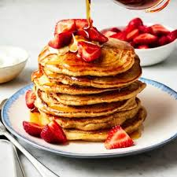

How to Make Pancakes

Pancakes are a classic breakfast food that is easy to make and can be customized with a variety of toppings
Ingredients
- 1 cup all-purpose flour
- 2 tablespoons of sugar
- 1 teaspoon of baking powder
- 1/2 teaspoon of baking soda
- 1/4 teaspoon of salt
- 1 cup of milk
- 1 egg
- 2 tablespoons of melted butter
Steps to Make Pancakes
- In a large bowl, whisk together the flour, sugar, baking powder, and salt.10
- In a separate bowl, whisk together the milk, melted butter or oil, and egg.
- Make a well in the center of the dry ingredients and gradually pour in the wet ingredients, whisking constantly until just combined.11 Be careful not to overmix
- Heat a lightly oiled griddle or frying pan over medium heat.12 Pour or scoop about 1/4 cup of batter onto the hot griddle for each pancake
- Cook until bubbles form on the surface of the pancakes and the edges look set, then flip and cook for another minute or two, or until golden brown.
- Remove the pancakes from the griddle and serve immediately with your favorite toppings, such as butter, syrup, fruit, or whipped cream. And Voila!
Nutritional Values
| Fat |
1g
|
| Energy |
20g |
| Calories |
300g |